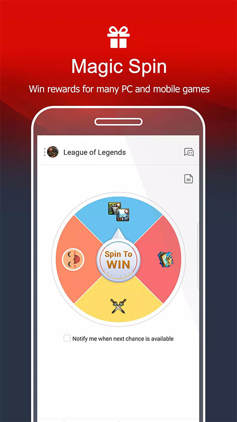

Garena App 的七年进化：从登录器到游戏生活方式平台
Garena 从一款不起眼的游戏启动器走到今天，靠的不是堆功能，而是把每一步都踩在用户真正在意的地方。这篇文章复盘它的迭代逻辑。
现在这版：一个不太像启动器的启动器
从Garena官网现在的介绍看，它已经被包装成一个游戏社区平台——但如果你三年前告诉我它会长成今天这样，我大概不会信。
我最早接触它的时候，它就是个纯纯的游戏登录器——打开、选游戏、点启动，然后切到游戏窗口，这 App 的使命就结束了。界面简陋得像上个时代的产物，功能数得过来：登录、注册、好友列表，没了。那时候没人会在这个 App 里多停留一秒。
但现在呢？我每天打开 Garena 的理由，跟"启动游戏"已经没关系了。早上通勤先去转个转盘，看看今天送了什么；午休刷一眼游戏专区的活动横幅，记下周末有什么限时福利；晚上上线之前先用手机跟电脑前的队友约好房间号——这些动作全在 Garena App 里闭环完成。它变成了一个你会主动刷的东西，而不是一个被迫打开的工具。
这种转变不是一夜之间的爆炸式改版，是七年里几十个版本一点点磨出来的。有意思的是，从这些版本的迭代顺序里，能清楚看到 Garena 团队一直在死磕什么、什么又被他们有意忽略了。

来路：每一次迭代都瞄准了一个具体的痛点
那时候装个 App 还要找论坛，不像现在直接从官方下载就能拿到安装包。Garena App 的历史我能追溯到 2018 年左右，那时候它叫 Garena Plus Desktop 的移动版本，基本就是桌面端的缩小移植。早期的版本号走得比较快，但变化都集中在登录稳定性和游戏兼容性上——你能感觉到那时候团队的重心是"让 App 能正常用"，而不是"让用户愿意用"。
第一个真正改变我使用习惯的功能，是 2020 年底加上的每日转盘。不是什么新鲜的运营手段，但 Garena 做了一件聪明的事：转盘不只是送点券送皮肤碎片，而是跟游戏里的实际消耗挂钩。抽到的道具直接进游戏邮箱，不需要额外兑换。那时候我才发现，原来免费福利还能做得这么顺滑——打开 App、转一下、进游戏领走，三个动作连起来不到一分钟，没有中间页没有弹窗广告。
转盘的成功似乎让团队摸到了一个方向：把游戏内的社交和运营活动搬到 App 里来。接下来的几个版本陆续加了签到体系、周常奖励、限时活动窗口——每一个功能单独看都不复杂，但叠在一起就形成了一个完整的"每日两分钟"节奏：固定一个锚点（比如每天下班到家），打开 App 扫一眼活动横幅、转个转盘、顺手把前一天的奖品领到账。这套流程我坚持了两年，不是因为奖励有多大，而是因为它真的没什么负担。
真正让我觉得 Garena 不再是启动器、而是一个独立产品的转折点，是 2022 年的跨端聊天大版本更新。在那之前 Garena 也有好友和聊天功能，但手机端和电脑端的消息是不互通的——你在电脑上跟朋友聊到一半，换手机就接不上了。跨端之后，手机和电脑共享同一套好友关系和消息记录，登录同一个帐号就能无缝切换。
这个改动看起来只是一个技术实现问题，但背后的产品逻辑很重要：Garena 不再满足于做游戏的"前置页面"，它想成为游戏社交的"中间层"。你在路上用手机约好开黑时间，队友在电脑上收到就顺手把游戏开了；电脑端的好友进了游戏、开了房间，手机端照样能实时收到消息。它不替代微信 Discord 这些日常聊天工具，但在"游戏相关的人和事"这个场景里，它确实站住了。
规律：从迭代节奏看团队的优先级
把这七年的版本更新拉出来看，几个模式反复出现：
他们一直在死磕"用户回来的理由"。 转盘、签到、活动窗口，这些都是拉回访的手段，但 Garena 做这些有一个特点——不逼你。所有的免费福利都是每日刷新、过期不补，但从来没有"看完广告才能领"这种设计。你想领就领，不想领也不弹窗烦你。对比一下同类型的其他游戏平台，那种强制弹窗看广告换奖励的做法我见多了，Garena 在这点上的克制一直让我印象深刻。
帐号安全是一条贯穿始终的暗线。 你去翻Garena文档里关于帐号安全的部分，会发现关于登录、密码规则、邮箱验证、绑定信息的改动出现得异常频繁——不是大功能，但一直在优化。密码规则从最初的随便填（导致大量被盗号），到后来的 8-16 位必须含字母和数字，再到邮箱验证体系的完善，再到改密码自动踢掉所有设备登录。这是一个典型的"出事了才重视"的领域，但 Garena 至少在持续地补，而不是靠一次安全事故涨教训。
有个细节很能说明问题：自助重置密码时如果系统提示"密码目前无法更改"，原因通常是这个帐号只登记了邮箱但从未完成验证。这个逻辑设计得非常"技术正确"，但对用户来说不友好——注册时随手填了邮箱、没点验证链接，半年后想起来登不上了，就只能走漫长的人工申诉。Garena 后来在注册流程里加了更显眼的验证提醒，但本质上还是把"验证邮箱"当成了用户自己的责任。这种"技术正确优先于用户体验"的倾向，在它的其他功能里也能看到。
什么一直没做？社区和内容。 七年了，Garena App 里至今没有一个像样的玩家社区——没有帖子、没有评论、没有攻略区。游戏资讯是有的，但都是官方推送的活动公告，不是玩家自发产生的内容。对比一下 B 站、NGA 这种玩家聚集地，Garena 在社区这块等于主动放弃了。我猜这是一个有意的选择：Garena 的核心是游戏分发和帐号体系，社区做不好反而成负担，不如专心把自己擅长的事情做透。

预判：照这个路线，下一步大概率是什么
说几个我从迭代规律里推的方向——不是官方消息，就是一个用了七年的用户的观察。
第一，游戏内集成会更深。 最近的几个版本里，Garena App 已经开始支持部分游戏内购直接跳转 App Store 或 Google Play，而不是在游戏里走充值流程。如果这个趋势继续，接下来可能会有更多游戏内功能（比如皮肤预览、战绩查询）直接集成到 App 里，用户不用在 App 和游戏之间反复切换。
第二，AI 助手可能会进来。 不是那种炫技的聊天机器人，而是解决实际问题的工具——比如输入"我 Free Fire 卡在黄金上不去"，助手给一套配装思路和练枪路线；或者"转盘今天没抽到好东西"，助手告诉你这周有什么活动能补回来。Garena 有游戏数据、有用户行为数据，做这种个性化建议的基础是够的。
第三，社区会不会补上？我倾向于不会。 七年没做，现在突然加社区的可能性不大——社区需要持续运营、需要内容生态、需要对付喷子和广告号，这些都不是 Garena 擅长的事。更可能的路线是：继续把"游戏生活的基础设施"做扎实，让转盘更顺滑、让跨端聊天更稳定、让帐号安全更放心，至于玩家讨论的地方，留给 B 站和 NGA 就好。
七年时间，Garena App 从一个我懒得点开的登录器，变成了我每天都要刷两分钟的东西。它没做过什么震惊业界的大版本更新，也没搞过什么流量明星代言，但它一直在做一件事：把用户真正在意的那个痛点磨到最好。每天两分钟的福利节奏、永远在线的跨端聊天、不出事的帐号安全——这些放在一起，就是一个产品最好的护城河。
如果你想自己试试看，这套资料我在整理时顺手同步了三份——GitHub 上最完整，Gitee 给国内访问更顺畅，GitCode 那边也留了一份备份：GitHub / Gitee / GitCode。